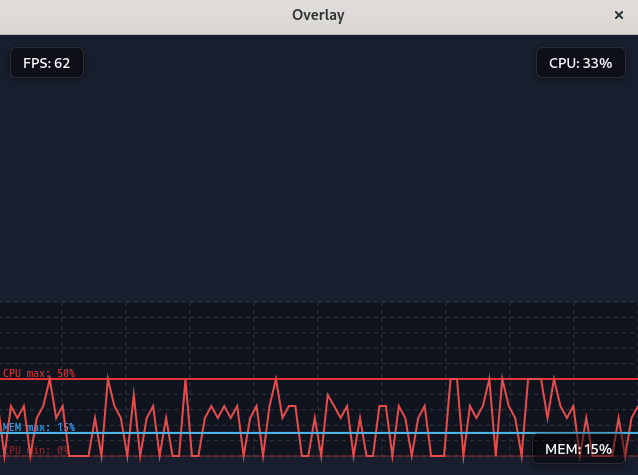

(update:2026/4/30)
Gtk::Overlay は、1つのメインウィジェットの上に、複数の補助ウィジェットを重ねて配置するためのコンテナです。
という構造を作成することができます。
set_child() を使って、引数として指定したウィジットをメインコンテンツとして Gtk::Overlay に配置します。
void Gtk::Overlay::set_child( Gtk::Widget& child )
add_overlay() を使って、引数として指定したウィジットをサブコンテンツとして Gtk::Overlay に重ねて表示します。
void Gtk::Overlay::add_overlay( Gtk::Widget& child )
css を用いて、Gtk::Overlay 上にサブコンテンツとして表示するウイジットの背景色、文字の色・フォント・サイズや枠線・枠線の印影などを自由に変更することができます。
void Gtk::Widget::add_css_class( const Glib::ustring& css_class )
Gtk::Overlay 上にサブコンテンツとして表示するウイジットの配置される位置を指定します。
Gtk::Overlay 上で水平方向での左端(Gtk::Align::START)・中央(Gtk::Align::CENTER)・右端(Gtk::Align::END)の位置を指定します。
void Gtk::Widget::set_halign( Gtk::Align align )
Gtk::Overlay 上で水平方向での上端(Gtk::Align::START)・中央(Gtk::Align::CENTER)・下端(Gtk::Align::END)の位置を指定します。
void Gtk::Widget::set_valign( Gtk::Align align )
Gtk::Overlay 上に表示するウイジットの余白・マージンを指定します。set_margin() では、上下左右に同じ余白を指定します。また、各辺ごとに余白を指定することもできます(上:set_margin_top()、下:set_margin_bottom()他)。
void Gtk::Widget::set_margin( int margin )
Gtk::Stack に表示するページを登録し、その後、Gtk::Stack を Gtk::StackSwitcher に結びつけます。
Gtk::Overlay を宣言します。
Gtk::Overlay を親ウイジットである Gtk::Window にセットします。
Gtk::Overlay にメインコンテンツとなる Gtk::DrawingArea をセットします。
#include <gtkmm.h>
#include <chrono>
#include <deque>
#include <fstream>
#include <sstream>
#include <cmath>
#include <algorithm>
class MyWindow : public Gtk::Window {
public:
MyWindow();
virtual ~MyWindow() = default;
private:
// 1.child widget の宣言
Gtk::Overlay* m_overlay;
Gtk::DrawingArea* m_area;
Gtk::Label *fps_label, *cpu_label, *mem_label;
std::chrono::steady_clock::time_point last_time;
int frame_count = 0;
bool cpu_initialized = false;
bool mem_initialized = false;
long last_user=0, last_nice=0, last_system=0, last_idle=0;
std::deque<int> cpu_history;
std::deque<int> mem_history;
const size_t max_points = 100;
void on_draw( const Cairo::RefPtr<Cairo::Context>& cr, int width, int height );
void draw_grid( const Cairo::RefPtr<Cairo::Context>& cr, int width, int y, int h );
void draw_minmax_lines( const Cairo::RefPtr<Cairo::Context>& cr,
const std::deque<int>& data,
int width, int y, int h,
double r, double g, double b,
const std::string& label_prefix );
void draw_text( const Cairo::RefPtr<Cairo::Context>& cr,
const std::string& text,
double x, double y,
double r, double g, double b, double a );
void draw_graph(const Cairo::RefPtr<Cairo::Context>& cr,
const std::deque<int>& data,
int width, int y, int h,
double r, double g, double b);
bool update_hud();
void update_fps();
void update_cpu();
void update_mem();
void push_history( std::deque<int>& dq, int value );
void load_css();
};
MyWindow::MyWindow()
: last_time( std::chrono::steady_clock::now() )
{
set_title( "Overlay" );
set_default_size( 640, 480 );
load_css();
m_overlay = Gtk::make_managed<Gtk::Overlay>();
// 2.Gtk::Overlay を 親ウイジットである Gtk::Window にセット
set_child( *m_overlay );
m_area = Gtk::make_managed<Gtk::DrawingArea>();
m_area->set_draw_func(sigc::mem_fun( *this, &MyWindow::on_draw ));
// 3.Gtk::Overlay にメインコンテンツをセット
m_overlay->set_child( *m_area );
// 4.Gtk::Overlay にサブコンテンツをセット
// --- HUD ラベル ---
// fps
fps_label = Gtk::make_managed<Gtk::Label>( "FPS: 0" );
// 4.1 css を用いて、Gtk::Label の書式を設定
fps_label->add_css_class( "hud-box" );
// 4.2 Gtk::Overlay の中での配置を指定
fps_label->set_halign( Gtk::Align::START ); // 水平方向
fps_label->set_valign( Gtk::Align::START ); // 垂直方向
fps_label->set_margin( 12 ); // 余白・マージン
// 4.3 Gtk::Overlay にサブのコンテンツを重ねる
m_overlay->add_overlay( *fps_label );
// cpu
cpu_label = Gtk::make_managed<Gtk::Label>( "CPU: 0%" );
cpu_label->add_css_class( "hud-box" );
cpu_label->set_halign( Gtk::Align::END );
cpu_label->set_valign( Gtk::Align::START );
cpu_label->set_margin( 12 );
m_overlay->add_overlay( *cpu_label );
// mem
mem_label = Gtk::make_managed<Gtk::Label>( "MEM: 0%" );
mem_label->add_css_class( "hud-box" );
mem_label->set_halign( Gtk::Align::END );
mem_label->set_valign( Gtk::Align::END );
mem_label->set_margin( 12 );
m_overlay->add_overlay( *mem_label );
Glib::signal_timeout().connect(
sigc::mem_fun( *this, &MyWindow::update_hud ), 16 );
}
// 描画
void MyWindow::on_draw( const Cairo::RefPtr<Cairo::Context>& cr, int width, int height )
{
cr->set_source_rgb(0.10, 0.12, 0.18);
cr->paint();
int graph_h = height * 0.35;
int graph_y = height - graph_h - 20;
// 背景
cr->set_source_rgba( 0.0, 0.0, 0.0, 0.35 );
cr->rectangle( 0, graph_y, width, graph_h );
cr->fill();
// --- グリッド線（点線） ---
draw_grid( cr, width, graph_y, graph_h );
// --- 最大/最小ライン + ラベル ---
draw_minmax_lines( cr, cpu_history, width, graph_y, graph_h,
0.9, 0.2, 0.2, "CPU" );
draw_minmax_lines( cr, mem_history, width, graph_y, graph_h,
0.2, 0.6, 0.9, "MEM" );
// --- CPU (赤) ---
draw_graph( cr, cpu_history, width, graph_y, graph_h,
0.9, 0.3, 0.3 );
// --- MEM (青) ---
draw_graph( cr, mem_history, width, graph_y, graph_h,
0.3, 0.7, 0.9 );
frame_count++;
}
// グリッド線（点線）
void MyWindow::draw_grid( const Cairo::RefPtr<Cairo::Context>& cr, int width, int y, int h )
{
cr->save();
cr->set_line_width( 1.0 );
cr->set_source_rgba( 1.0, 1.0, 1.0, 0.15 );
std::vector<double> dashes = { 4.0, 4.0 };
cr->set_dash(dashes, 0.0);
for (int i = 0; i <= 10; i++) {
double py = y + h - ( h * i / 10.0 );
cr->move_to( 0, py );
cr->line_to( width, py );
}
for (int i = 0; i <= 10; i++) {
double px = width * i / 10.0;
cr->move_to( px, y );
cr->line_to( px, y + h );
}
cr->stroke();
cr->restore();
}
// 最大値・最小値ライン + ラベル
void MyWindow::draw_minmax_lines( const Cairo::RefPtr<Cairo::Context>& cr,
const std::deque<int>& data,
int width, int y, int h,
double r, double g, double b,
const std::string& label_prefix )
{
if ( data.empty() ) return;
int maxv = *std::max_element( data.begin(), data.end() );
int minv = *std::min_element( data.begin(), data.end() );
double max_y = y + h - ( maxv * h / 100.0 );
double min_y = y + h - ( minv * h / 100.0 );
// 最大値ライン（濃い色）
cr->save();
cr->set_line_width( 2.0 );
cr->set_source_rgba( r, g, b, 1.0 );
cr->move_to( 0, max_y );
cr->line_to( width, max_y );
cr->stroke();
cr->restore();
// 最大値ラベル
draw_text( cr, label_prefix + " max: " + std::to_string( maxv ) + "%",
5, max_y - 2, r, g, b, 1.0 );
// 最小値ライン（薄い色）
cr->save();
cr->set_line_width( 1.5 );
cr->set_source_rgba( r, g, b, 0.35 );
cr->move_to( 0, min_y );
cr->line_to( width, min_y );
cr->stroke();
cr->restore();
// 最小値ラベル
draw_text( cr, label_prefix + " min: " + std::to_string( minv ) + "%",
5, min_y - 2, r, g, b, 0.6 );
}
// テキスト描画（Cairo）
void MyWindow::draw_text( const Cairo::RefPtr<Cairo::Context>& cr,
const std::string& text,
double x, double y,
double r, double g, double b, double a )
{
cr->save();
cr->set_source_rgba( r, g, b, a );
cr->select_font_face( "Sans", Cairo::ToyFontFace::Slant::NORMAL,
Cairo::ToyFontFace::Weight::NORMAL );
cr->set_font_size( 12.0 );
cr->move_to( x, y );
cr->show_text( text );
cr->restore();
}
// 折れ線グラフ
void MyWindow::draw_graph(const Cairo::RefPtr<Cairo::Context>& cr,
const std::deque<int>& data,
int width, int y, int h,
double r, double g, double b)
{
if ( data.size() < 2 ) return;
cr->save();
cr->set_line_width( 2.0 );
cr->set_source_rgb( r, g, b );
double dx = (double)width / ( max_points - 1 );
cr->move_to( 0, y + h - ( data[0] * h / 100 ));
for (size_t i = 1; i < data.size(); i++) {
double px = i * dx;
double py = y + h - ( data[i] * h / 100 );
cr->line_to( px, py );
}
cr->stroke();
cr->restore();
}
// -----------------------------
// 更新処理
// -----------------------------
// HUD
bool MyWindow::update_hud()
{
update_fps();
update_cpu();
update_mem();
m_area->queue_draw();
return true;
}
// fps
void MyWindow::update_fps()
{
auto now = std::chrono::steady_clock::now();
double elapsed = std::chrono::duration<double>(now - last_time ).count();
if ( elapsed >= 1.0 ) {
fps_label->set_text( "FPS: " + std::to_string( frame_count ));
frame_count = 0;
last_time = now;
}
}
// CPU
void MyWindow::update_cpu()
{
std::ifstream file( "/proc/stat" );
if ( !file ) return;
std::string line;
std::getline( file, line );
std::istringstream iss( line );
std::string cpu;
long user, nice, system, idle;
iss >> cpu >> user >> nice >> system >> idle;
if ( !cpu_initialized ) {
last_user = user;
last_nice = nice;
last_system = system;
last_idle = idle;
cpu_initialized = true;
return;
}
long user_d = user - last_user;
long nice_d = nice - last_nice;
long system_d = system - last_system;
long idle_d = idle - last_idle;
long total = user_d + nice_d + system_d + idle_d;
long busy = total - idle_d;
int cpu_percent = (total > 0) ? (busy * 100 / total) : 0;
cpu_label->set_text("CPU: " + std::to_string(cpu_percent) + "%");
push_history(cpu_history, cpu_percent);
last_user = user;
last_nice = nice;
last_system = system;
last_idle = idle;
}
// MEM
void MyWindow::update_mem()
{
std::ifstream file( "/proc/meminfo" );
if ( !file ) return;
std::string key;
long mem_total = 0, mem_free = 0, buffers = 0, cached = 0;
while ( file >> key ) {
if ( key == "MemTotal:" ) file >> mem_total;
else if ( key == "MemFree:" ) file >> mem_free;
else if ( key == "Buffers:" ) file >> buffers;
else if ( key == "Cached:" ) file >> cached;
}
long used = mem_total - ( mem_free + buffers + cached );
int percent = ( mem_total > 0 ) ? ( used * 100 / mem_total ) : 0;
mem_label->set_text( "MEM: " + std::to_string(percent) + "%" );
if ( !mem_initialized ) {
mem_initialized = true;
return;
}
push_history( mem_history, percent );
}
// history 管理
void MyWindow::push_history( std::deque<int>& dq, int value )
{
dq.push_back( value );
if ( dq.size() > max_points )
dq.pop_front();
}
// CSS
void MyWindow::load_css()
{
auto provider = Gtk::CssProvider::create();
provider->load_from_path( "style.css" );
if ( auto display = Gdk::Display::get_default() ) {
Gtk::StyleContext::add_provider_for_display(
display, provider, GTK_STYLE_PROVIDER_PRIORITY_APPLICATION );
}
}
int main( int argc, char** argv )
{
auto app = Gtk::Application::create( "overlay.example" );
return app->make_window_and_run<MyWindow>( argc, argv );
}
.hud-box {
background-color: rgba( 0, 0, 0, 0.45 );
color: #f5f5f7;
padding: 6px 12px;
border-radius: 6px;
font-weight: 600;
font-size: 14px;
border: 1px solid rgba( 255, 255, 255, 0.12 );
box-shadow: 0 2px 8px rgba( 0, 0, 0, 0.45 );
}

| Previous | Top | Next |
| Copyright (c) Henrry Yamm Project All Rights Reserved. |
|---|